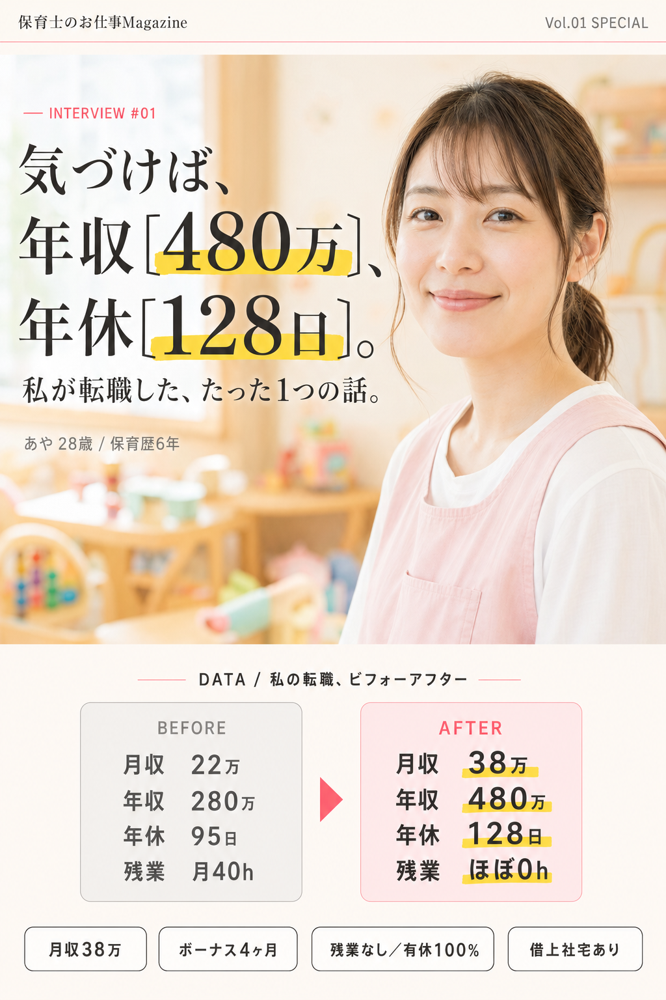
20代で月収38万円以上も夢じゃない。
低待遇で休めない限界保育士でも、
超ホワイト園に最短1ヶ月で出会うコツ
日々、保育士として働いていて
こんなお悩み、ありませんか？
給料低いのにサビ残ウザすぎる😭
今大変だけどさ、来月の京都旅行楽しもうよ！
シフト希望どうだった！？
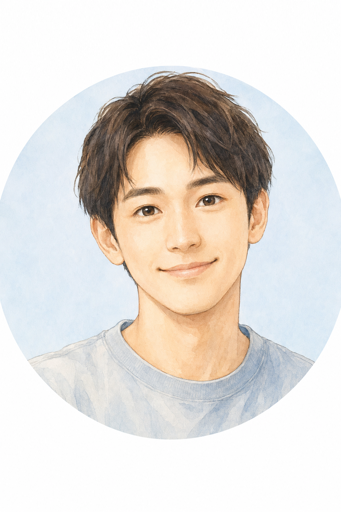
シフト希望が全然通ってなくて行けなさそうなの😢
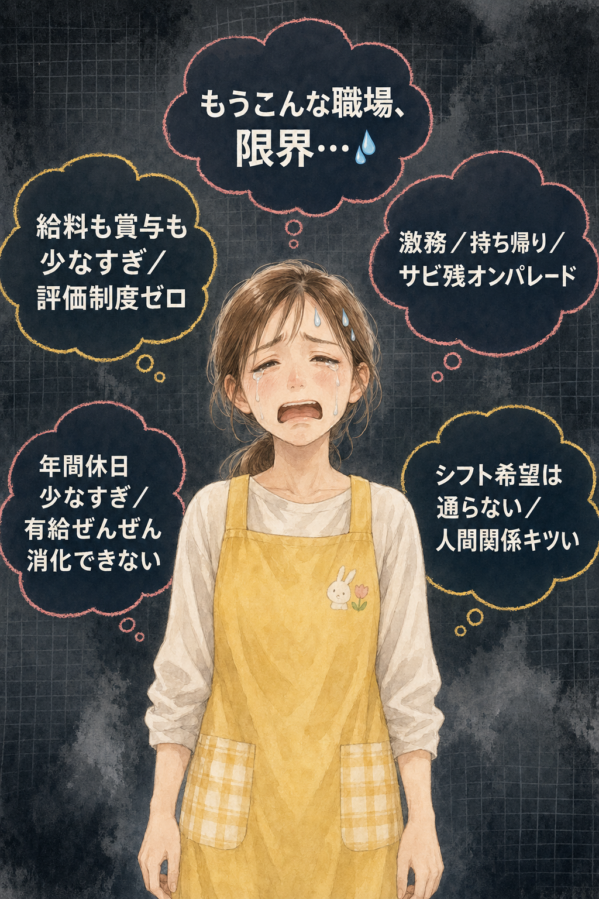
そもそも保育士って、
そんなに辞めたい人が多いの？
厚生労働省の最新調査によると、現役保育士のうち約48％が「今すぐ、もしくは近いうちに転職を考えている」と回答しています。
その理由として最も多いのが、以下の5つです。
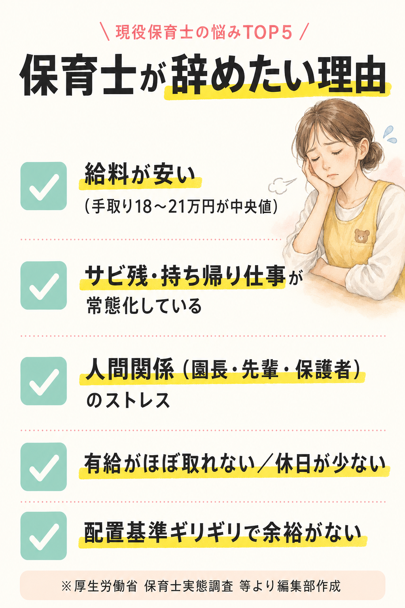
ここで知っておいてほしいのは 「同じ保育士なのに、ホワイト園で月収38万円以上、年休128日以上で働いている人もたくさんいる」 という事実です。
次の転職先が年間休日128日、残業なし！
しかも年収480万も貰えるの！
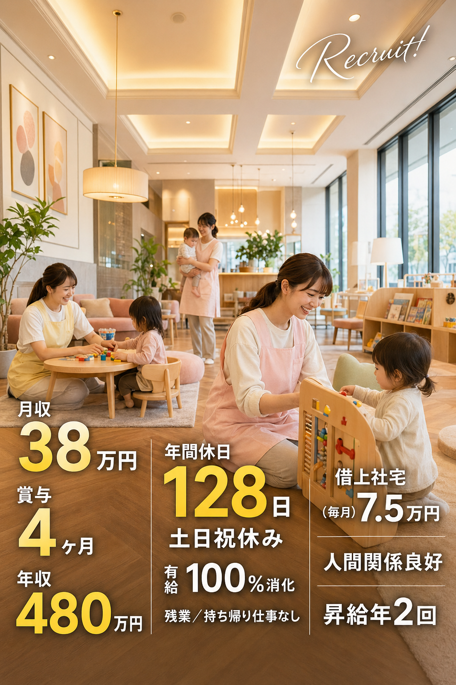
良くそんな高待遇の保育園見つけたね！笑
「好条件専門の保育士求人サイト」を紹介してもらえたの！😉
後悔しないために、
今オススメなのが「保育士バンク！」
編集部が現役保育士・転職経験者500人以上にヒアリングした結果、圧倒的に評価が高かったのが、業界トップクラスの求人情報を持つ 『保育士バンク！』 でした。
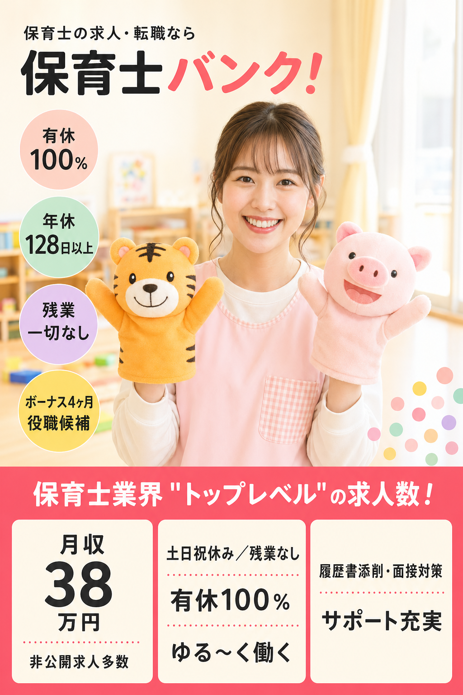
月収38万の非公開求人ザックザック見つけ放題！笑
高待遇の非公開求人が豊富なのが強いよね！
他にない
高待遇の非公開求人！
ハローワークや一般の求人サイトには出てこない、「非公開求人」を多数保有しているのが保育士バンク！の強みです。
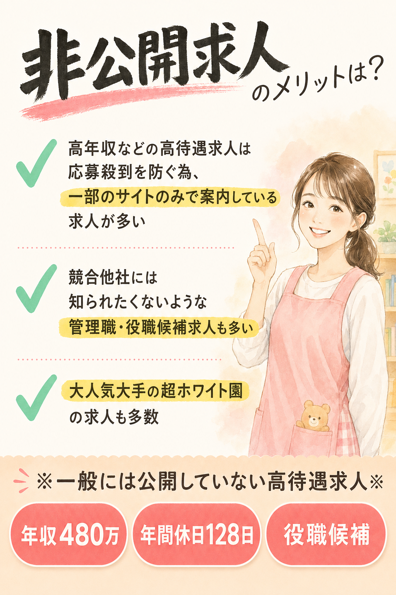
自分にピッタリの求人見つけられるね！
実際に 保育士バンク！ は
3冠を達成しています
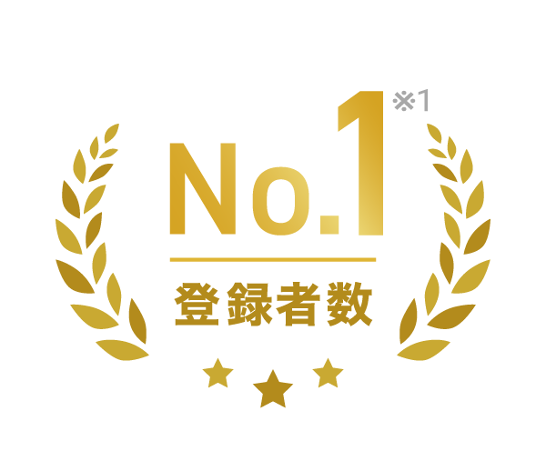
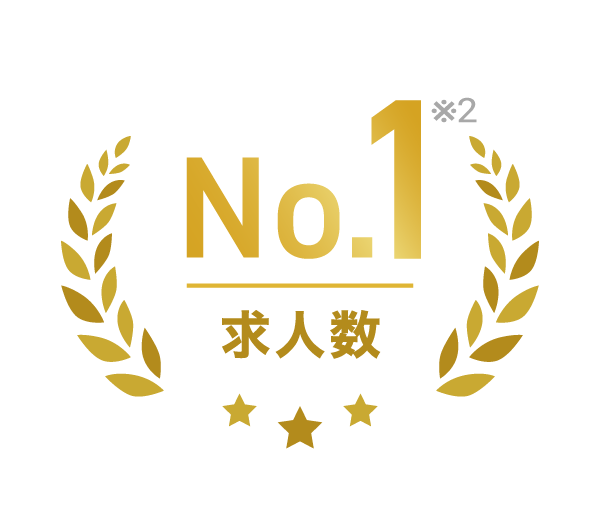
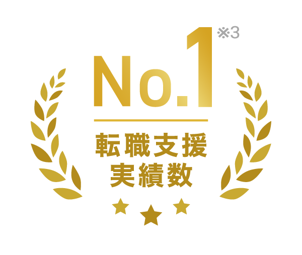
※公開求人数・保育士転職支援実績数（累計）No.1を指す。
「保育士特化職業紹介サービス」に関する市場調査《No.1検証調査》（㈱未来トレンド研究機構 調べ）
※2025年9月25日時点
何年働いても基本給が上がらないし、ボーナスも上がらない。パワハラもありすぎ。サービス残業も多くて転職を決意！残業もなく、有休が取りやすく働きやすい職場でお給料も相場以上なので満足してます！書類や面接のアドバイスも的確で内定通過率すごいです！
人手不足で休みも取れず、長時間労働の毎日で心身ともに疲れてしまい結婚も考えていたので、ゆる〜く働ける職場を探すことにしました。保育士バンク！の最高なポイントは、非公開求人量が多く、高待遇な求人ザクザク見つかります。しかも、書類添削から面接対策、内定後の給与交渉まで丁寧にサポートしてくれて本当に助かりました。
条件交渉まで代わりにやってくれて、自分では絶対に無理でした。本当に登録してよかったです。もっと早く動けばよかったと心から思っています。シングルマザーですが、勤務時間や休日にも配慮してくれた園を紹介してもらえました！
登録から内定までのカンタン3ステップ
保育士バンク！の登録はかんたん30秒で完了。
その後の流れもシンプルです。
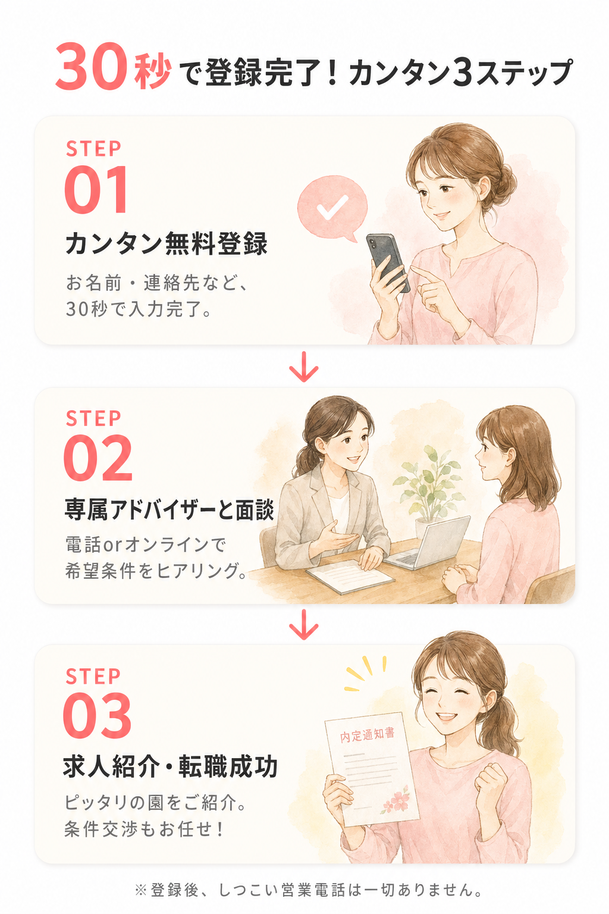
実は5〜6月が、
1年で最も求人が多いって知ってました？
保育士の転職市場は、夏のボーナス支給後にあたる5〜6月に求人が一気に増える傾向があります。
ボーナス受け取り後に動き出す保育士が多く、10月入職や来年4月入職の早期募集がちょうど重なるためです。
当たり前ですが、好条件の求人からどんどん無くなっていきます。
早めに動くことが、保育士の転職で失敗しないコツです！
まずは登録しておくのが正解。
登録は無料なので、いったん見てみるだけでも全然OKです。
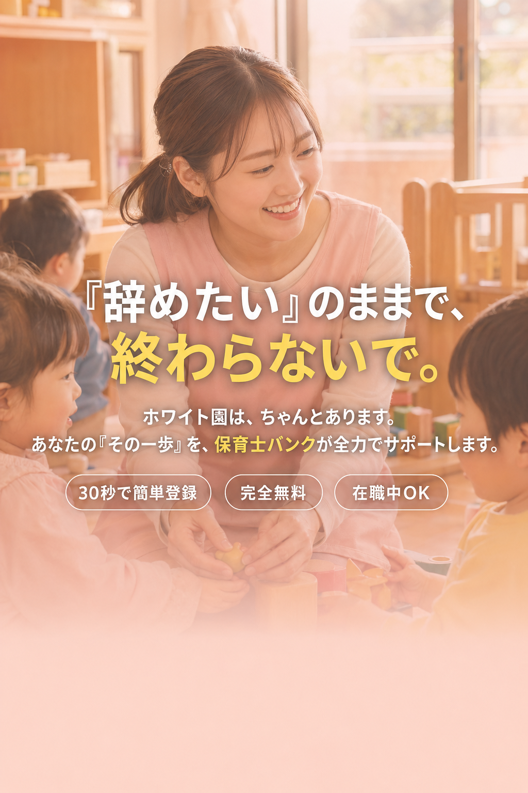